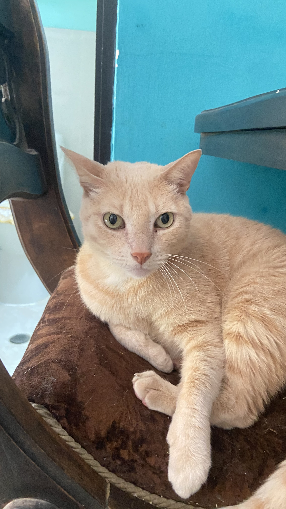
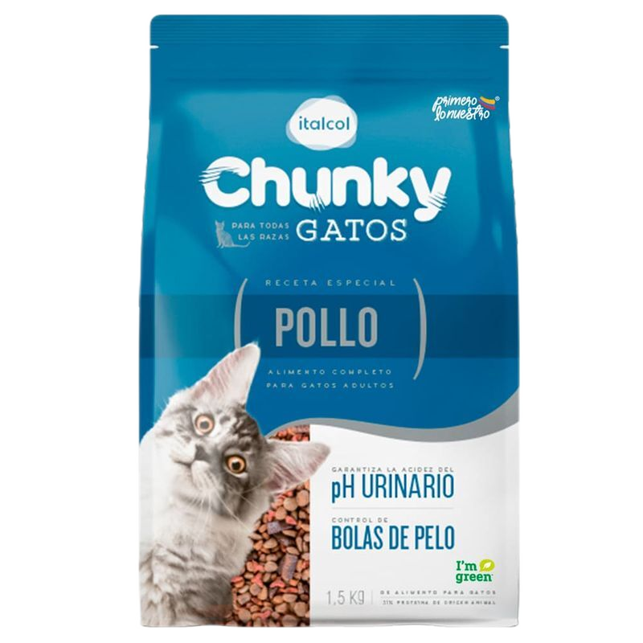
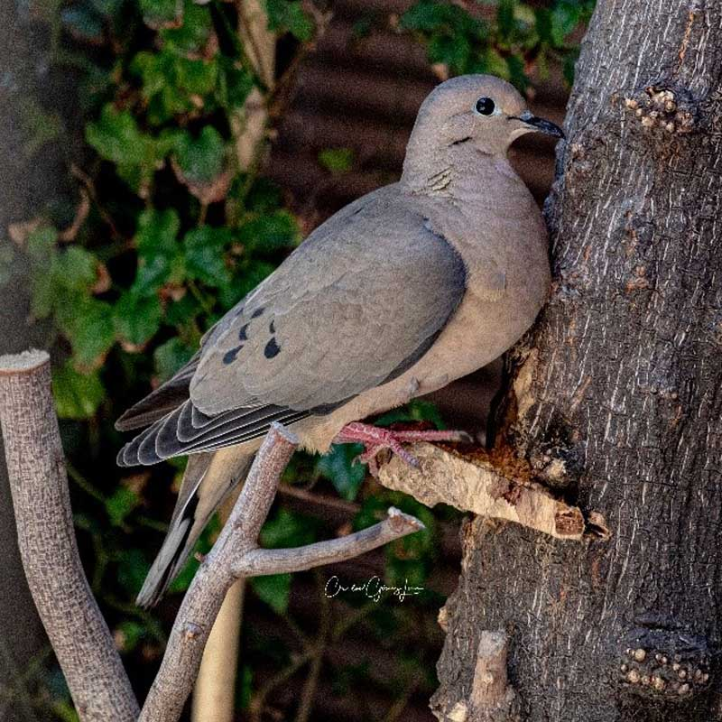

Mirringo, un gato de raza mixta al que le gusta comer.

Hola, soy Mirringo aunque tengo muchos nombres, tales como michi, michito, mochito, mich, etc...
Vivo en
Colombia, Santander, Girón, y lamentablemente nunca he viajado fuera de este lugar, aunque no soy mucho de
viajar. De hecho, la última vez que mis dueños quisieron llevarme de paseo, rompí toda mi jaula y la deje
como una bola de tela, aun así me han logrado llevar al peor lugar que existe: el veterinario.
Nací al
rededor del 2013 o 2012, mis primeros dueños me echaron de la casa porque les robe un pedazo de carne,
entonces es ahí donde una señora abuela me agarro y me dio comida, no me adopto, pero me daba comida y todos
los días la visitaba, ya que no tenía un hogar. Un día lluvioso todo eso cambio cuando un niño que iba camino
a la tienda de la esquina me vio maullando debajo de la lluvia, entonces me agarro y me metió en su casa, yo
le diría a eso un secuestro, pero uno que me benefició mucho. El niño siempre me daba comida, me empezó a
bañar y a cuidar, él me dice "mich, mich ven" cuando me servía comida, por eso mi primer nombre fue
Mich.
Resulta que la señora abuela que me dio comida era la abuela de ese niño y pues yo
acompañaba al niño cuando iba caminando a visitar a su abuela porque A Mí NO ME GUSTAN LAS JAULAS
. Cuando salía me encontraba con mis amigos y enemigos, por eso más de una vez llegue
a casa lastimada o sangrando, una vez me lastime tanto la oreja que ahora no la tengo completa, pero me
sigue sirviendo GRACIAS A MICHI.
Un día mi mejor amigo y dueño (el niño) se tuvieron que
ir a quién sabe donde y yo me quede con la abuela del niño, y con su desagradable perra pincher que aunque
es pequeña es fastidiosa con los animales. La abuela esa me castro y subí de peso, deje de pelear tanto con
los demás gatos (aunque eso no significa que no siguiera siendo el rey y jefe de la cuadra), y empecé a
comer y dormir más, como si tuviera depresión. Un día me dio una enfermedad en los riñones por culpa de la
comida barata que la abuela me daba, así que me tuvieron que llevar al veterinario, bueno, lo trataron de
hacer varias veces y yo siempre arañaba a los doctores hasta que llegue a un lugar donde me aguantaron
aunque me tuvieron que dormir y me curaron de mi enfermedad. Creo que es una enfermedad muy común porque una
gata que conocí también le dio. Ese fue la primera y última vez que viaje lejos de mi barrio(no lo deseo
volver a hacer). Un día la mamá del niño llegó, pero el niño no. En ese entonces yo ya tenía todo un cuarto
para mí. En el 2021 el niño volvió junto con una gata siamesa muy territorial llamada Jade, yo traté de ser
su amigo, pero ella me empezó a molestar y a lastimarme, casi me quita mi preciado pelo en una pelea. Pero
luego el niño se mudó y todos los sábados viene a visitarme con un nuevo perro beagle llamado Zeus. He
bajado un poco de peso, yo creo que puedo ser como Thor y pasar de gordo a estar en forma. Hoy en mayo del
2023 tengo ya 10 u 11 años y sigo más vivo que nunca. Creo que soy inmortal.

Empecé a comer esto desde que me enferme de los riñones, el veterinario decía que me protegía de enfermedades así. Cada vez que me van a dar comida empiezo a maullar y fastidiar tanto que una vez derrame mi bolsa de pepitas. (No le estoy haciendo promoción a este producto) Le doy 5 estrellas.

Desde que tengo memoria he cazado animales y los he llevado a la casa, a veces se los dejo en las camas de mis dueños, en sus pies, en el comedor, o a veces simplemente empiezo a jugar con sus cuerpos inmóviles hasta aburrirme, pero nunca sería tan maleducado como para comérmelas. Qué asco. Le doy 4 estrellas.

El pollo no es lo que más me gusta, solo lo puse en esta lista porque se lo pido a mis dueños, aunque la mayoría de las veces lo dejo tirado, también me gustaría cazar uno vivo, pero nunca he conocido una granja y también lo dejaría tirado en vez de comérmelo, o tal vez se lo llevaría a alguien. Le doy 2 estrellas.

Me encanta dormir, dormir es como una batería, es una forma de relajarse, y yo tengo como 15 camas distribuidas en toda la casa, siempre hay que estar preparados, nunca sabes cuando te dará sueño. Le daría 6 estrellas o incluso 100, pero solo puedo hasta 5 >:(.

Me gusta acompañar a mis dueños, cuando van a la tienda yo voy con ellos, pero no camino más porque estaría saliendo de mi territorio. También me gusta acompañarlos cuando estudian, cuando trabajan, cuando duermen y hasta cuando comen(aunque eso lo hago para que me den comida). Cuando quiero que me acaricien voy por mis dueños y empiezo a portarme cariñoso. Le doy 4 estrellas porque a veces se pasan de caricias y tengo que tomar medidas como arañar o morder para que me suelten.
:format(jpeg)/cloudfront-us-east-1.images.arcpublishing.com/elespectador/FSXQGTLBUVHDJMWKPLU6L6XI4E.jpg)